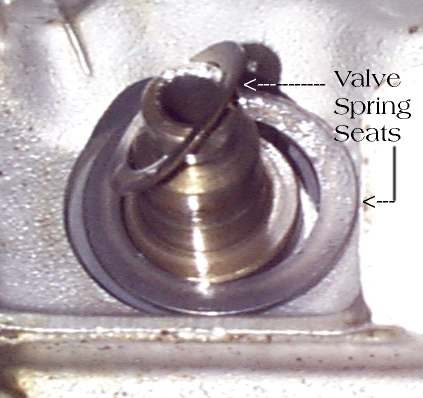
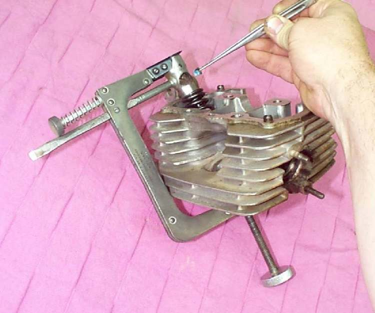

Photo: Dan's Motorcycle Repair Course (dansmc.com), used with permission.
Valve springs are coil springs around each valve stem in the cylinder head. Many commuter engines, including the K-Light, use two springs per valve, one inside the other. A retainer and two small collets hold them on the valve.
What it does
The cam or rocker pushes the valve open; the spring pulls it shut again and holds it on its seat. Springs lose length and force after many heat cycles, or after over-revving. A weak spring lets the valve bounce at high revs, which feels like a misfire, and in the worst case the valve can touch the piston.
Signs it is worn or failing
- Misfires only at high revs with plug and ignition checked good.
- Ticking from the top of the engine or a noisy head.
- Low compression if a valve is held slightly open.
- A spring that is shorter than the limit, cracked or not square when stood on a flat surface.
When to replace it
When free length is below the limit, a coil is cracked, or the spring leans. Replace springs as a set for that valve, and ideally both valves. Follow your bike's manual.
What to match when buying
- Match engine code and inner or outer position. Inner and outer springs are different.
- Compare free length and wire thickness with the old spring. Stiffer "racing" springs wear the cam faster.
- Buy new collets and retainers if they show wear marks.
Fitting notes
- Workshop job. Use a valve spring compressor; springs can fly out and hurt you.
- Fit with the close-wound coils toward the combustion chamber, and check both collets are seated.
- See Assess the top end.
Reference (K-Light 125)
| Item | Value | PDF page |
|---|---|---|
| Inner spring free length | standard 33.5 mm, limit 30 mm | 202 |
| Outer spring free length | standard 40.9 mm, limit 39.5 mm | 202 |